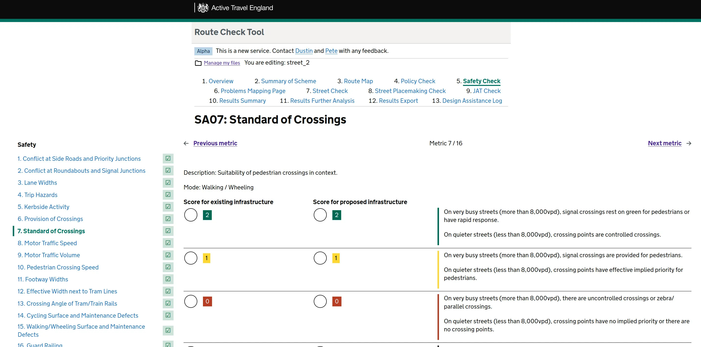

Try the development version at
Code:
While Dustin was on secondment with Active Travel England (ATE) from 2023 to 2025, he led the digitisation of an Excel route check tool. This is used by both the Inspectorate team and external partners to evaluate the quality of an active travel route in great detail. The Excel tool suffers from some accessibility problems, and the web app uses the GOV.UK design system to make the tool much faster and easier to use.
After the user identifies the roads, the Junction Assessment Tool quickly generates possible cycling movements. Users map and score every cyclist and pedestrian movement through every major junction along the route, and automation like this saves dozens of minutes per scheme assessing long routes.
One detailed question a user answers about the route.
An overview of how a route scores before and after a proposal.
Dustin worked directly with the the Inspectorate, who use the old Excel tool daily. Regular feedback and shared co-design sessions let the tool be perfectly fit-to-task. Dustin worked with other members of ATE's data and digital team to develop the tool, and Jadene Aderonmu from Methods, who led user experience research and design.